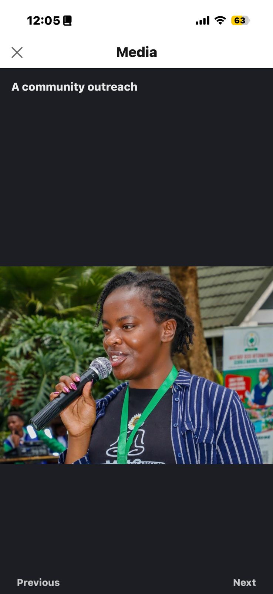
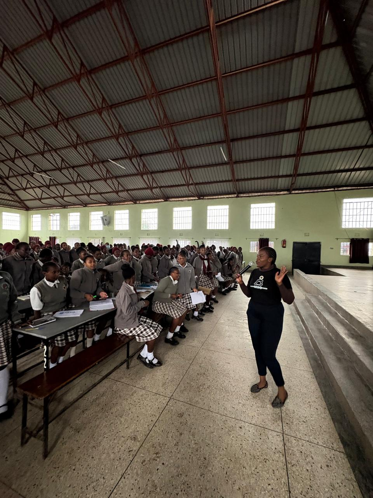
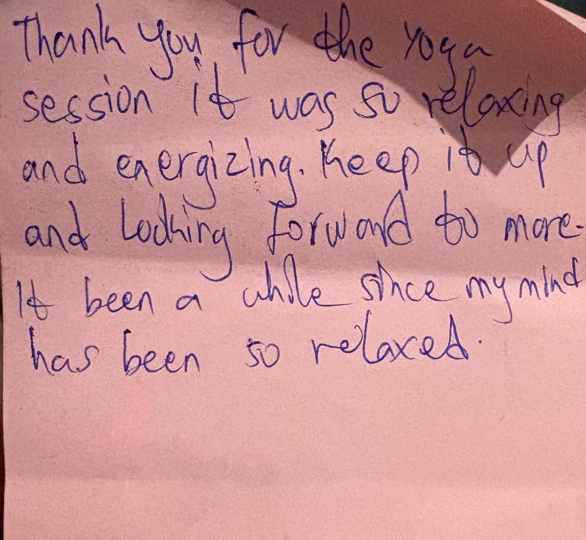
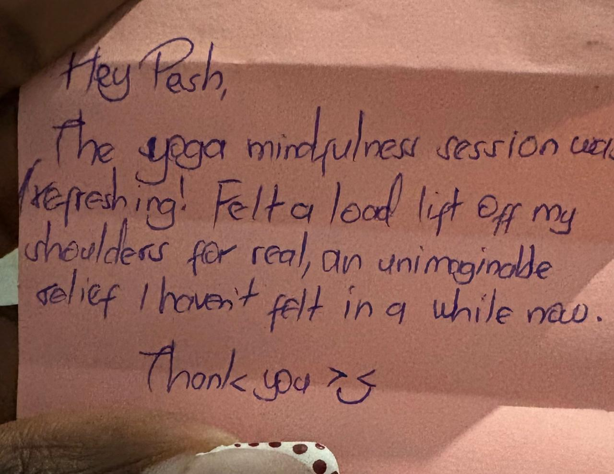
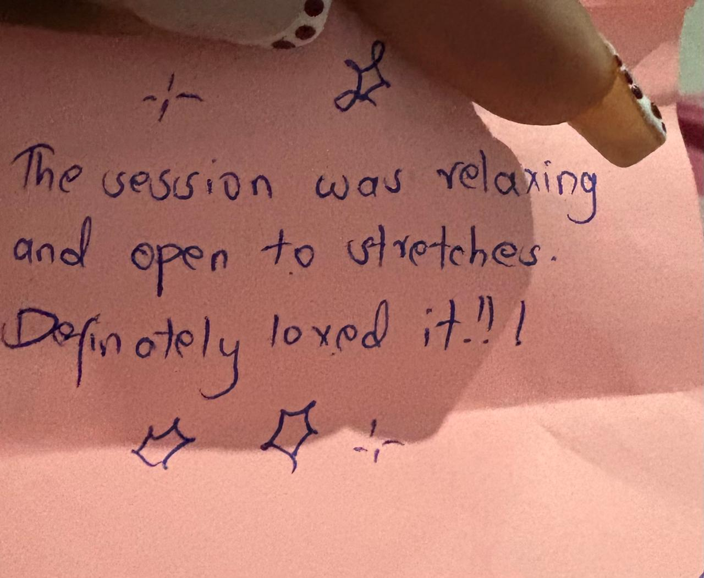

Who Am I
My work is at the intersection of climate action, sexual and reproductive health, and mental health.
Peris Mutena is a psychology student and emerging mental health professional who engages in team facilitation, peer-counseling support and psychological assistance, conducts research on mental health and well-being, and participates in community outreach programs. She applies her knowledge to help individuals manage stress, develop coping strategies, and promote emotional resilience.
She has a deep interest in youth and children. In her free time, Peris enjoys reading novels and exploring creative writing at the Epic Pulse Magazine as a way to relax and reflect and reach a wider demographic.
As a Cohort 2 Generation Mental Health Fellow, she now runs Mindful Moments Generation where she focuses on mindful pauses and self-care, and now a Nivishe fellow strengthening her community outreach skills among many other things.
What Do I Do
Program Coordination | Mentorship | Peer-Counselling | Psychological Work Support
Program Coordination
Managing and streamlining organizational programs for maximum impact and efficiency.
Mentorship
Guiding and supporting individuals in their professional and personal development journeys.
Peer-Counselling & Psychological Work Support
Supporting clients by understanding their emotions and providing guidance. Also providing professionals with service delivery and clinical administration tasks.
Research & Data Analysis
Designing studies, collecting and interpreting psychological data.
Stress & Coping Strategy Development
Helping individuals develop techniques to manage stress and build resilience.
Community Engagement
Organizing and participating in outreach programs to promote mental health awareness.
Project Management
Planning, executing, and closing projects efficiently to achieve specific goals.
Self-Care Advocacy
Promoting healthy routines and habits in daily life and professional practice.
Professional Engagement

Community Outreach & Impact


Mindful Moments
Testimonials


